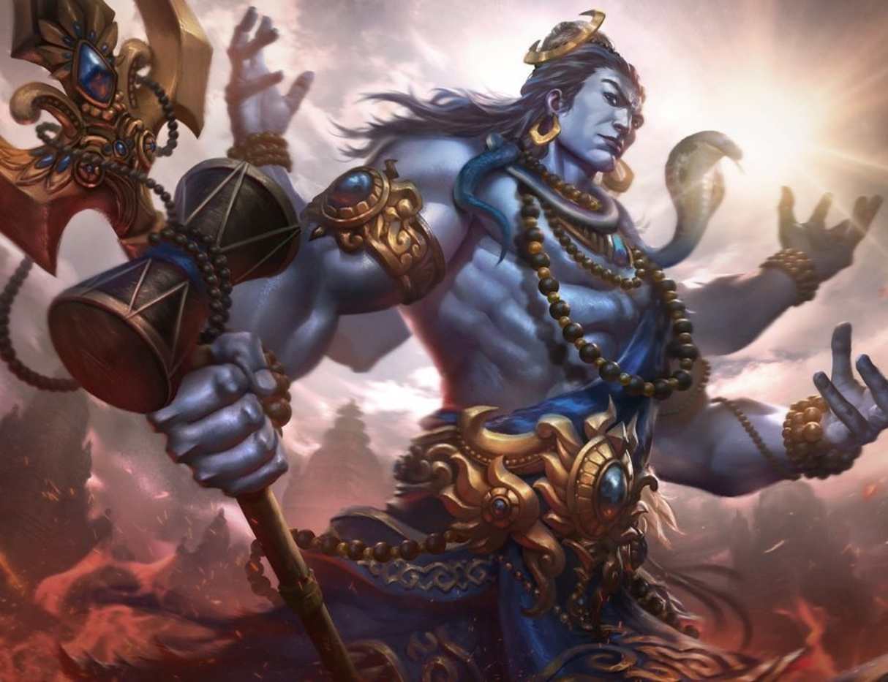
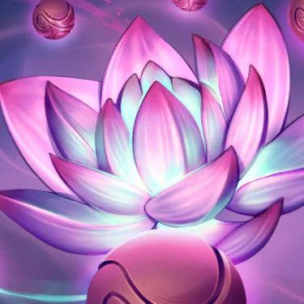
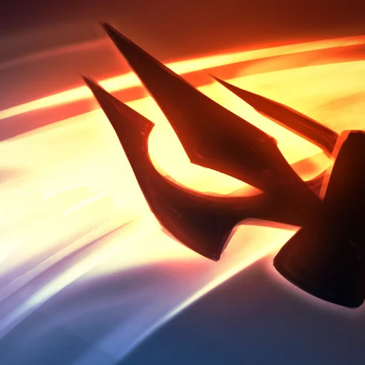
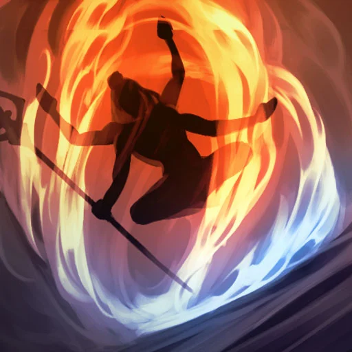
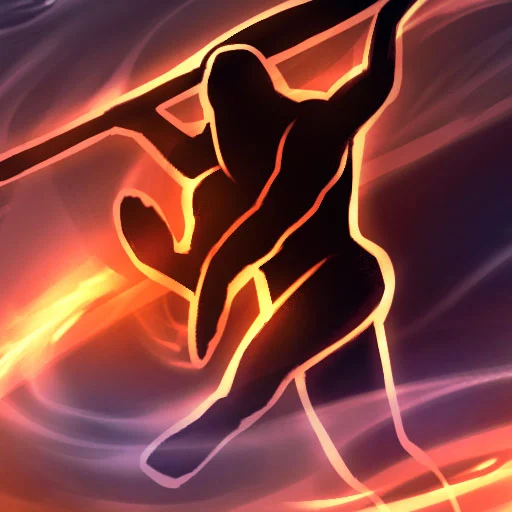

Newest God
Shiva The Destroyer

Worlds end, when the Destroyer dances. But so too do worlds begin, as Destroyer becomes Benefactor. It is the eternal cycle of destruction and creation, a cosmic song heard by all, but the steps of its dance are known only to one – the Lord of Dancers, Shiva.A god of ambiguity and paradox, Shiva has as many names as there are stars in the sky. He is the embodiment of grace and compassion, but also the roaring storm which sweeps away all that stands before it. He comes in forms both fearsome and benign; destroyer and creator in one. To Shiva falls the responsibility of ensuring the sanctity of all that is. This duty requires both ferocity and mercy, for it is Shiva who must stand against the all-consuming dark and conjure light from its depths with his dance.When the world has reached its end, it is Shiva who ushers it into oblivion. His dance, once begun, cannot be ended save in cataclysm. A purifying conflagration that reduces the old and weary world to ashes, so that something new might rise in its place. Thus has Shiva come now to the world and revealed himself to the warring gods who populate it. By his dance will the mistakes of the past be undone...and a new beginning allowed to commence.
Skill Priority

SAMSARA:
Shiva cycles between the states of Bliss and Destruction by dealing damage to enemy gods with attacks and abilities. Each state provides benefits to himself and allies or hindrances to enemies. On switching between states Shiva's non-ultimate ability cooldowns are reduced by 2s.

EMBLAZONED SWEEP:
Shiva’s trident is emblazoned with the fire of Agni as he spins it around dealing damage, pulling in enemies and leaving behind a firewall at the edge. Bliss - Allies gain a Movement Speed buff on passing the firewall. Destruction - Enemies suffer a Protection Reduction debuff on passing the firewall.
DAMARU'S TEMPO:
Shiva hits the butt of his trident down into the ground, shaking the damaru drum and causing energy to dissipate and damage enemies. Depending on the selection, enemies in the chosen segment are knocked up as well. Bliss - Allies gain an Attack Speed buff if the energy passes through them. Destruction - Enemies suffer an Attack Speed debuff if the energy passes through them.

PILLAR OF DAWN:
Shiva dashes into a pillar of fire where he meditates for a short duration, taking reduced damage and CC Immune, before being able to dash out again. Each dash deals damage to enemies and as he meditates the pillar emits an aura. Bliss - Allies in the aura gain a block stack while Shiva gains up to 3 after leaving. Destruction - Enemies in the aura suffer constant damage.

SHIVA TANDAVA:
Shiva performs his Tandava, channeling for the next 6s with CC Immunity and 25% damage mitigation. Every 1.5s he performs a step that can be preselected. Step one - Ally Healing and Mana restore. Step two - 50% Damage and Healing and also amplification of next step radius and effects. Step three - Damage and Shield reduction to Enemies.
)